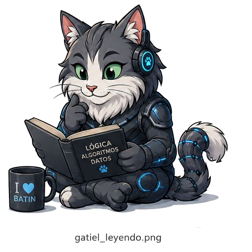
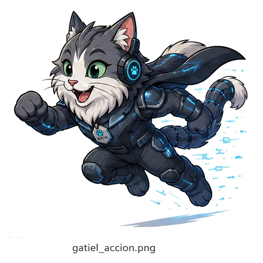
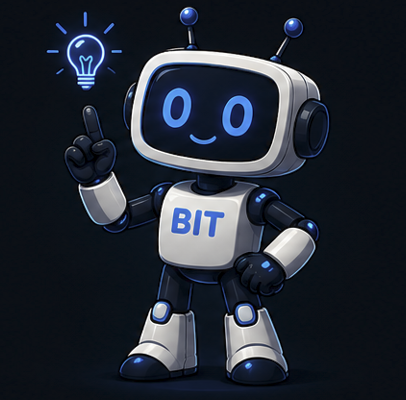
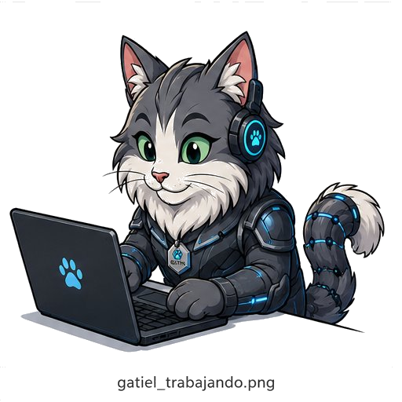

// zona 01 · base cultural del BATIN
El Sistema
Antes de escribir código, hay que entender el sistema que habitamos. ¿Quiénes lo construyeron? ¿Con qué valores? ¿Hacia dónde va? Esta sección no es un complemento — es el fundamento.

Antes de escribir código, hay que entender el sistema que habitamos. ¿Quiénes lo construyeron? ¿Con qué valores? ¿Hacia dónde va? Esta sección no es un complemento — es el fundamento.

"Esta página no es una línea de tiempo. Es un mapa de ideas. Aquí se recorren las mentes que imaginaron, construyeron, conectaron, cuestionaron y gobernaron el sistema digital que hoy habitamos. No desde la nostalgia tecnológica, sino desde una pregunta central: ¿Qué tipo de sistema estamos heredando… y cuál estamos eligiendo sostener?"
Una genealogía crítica de la computación, la red y la decisión humana.
En este nodo encontramos a quienes imaginaron el sistema antes de que existiera. Su pensamiento lateral permitió ver lógica donde otros solo veían metal.
Mientras otros veían una calculadora gigante, ella vio una máquina capaz de crear música y arte a través de algoritmos.
El maestro de la lógica que demostró que una máquina podía resolver cualquier acertijo si se le hacían las preguntas correctas.
La mujer que nos enseñó a hablar con las máquinas en un lenguaje humano. Advirtió que la frase más peligrosa es: "Siempre se ha hecho así".
Los personajes que sacaron la informática de los laboratorios y la pusieron en nuestras manos, reescribiendo las reglas de cómo interactuamos con el silicio.
La ingeniera que salvó la misión a la Luna diseñando un software capaz de priorizar tareas críticas en medio de un caos de datos.
Estrella de cine e inventora que ideó el sistema de salto de frecuencia, la lógica secreta que hoy permite que funcionen el Wi-Fi y el Bluetooth.
El hombre que se negó a ver la informática como algo gris y aburrido, integrando el diseño y la belleza para que la tecnología fuera una extensión de nuestra creatividad.
Quien comprendió antes que nadie que el verdadero poder de una computadora no está en sus piezas, sino en el sistema operativo que le da vida.
El programador que decidió que el conocimiento debía ser libre, creando el núcleo (kernel) que hoy mueve a internet y a los servidores del mundo.
Nuestros ancestros más recientes. Ellos aplicaron el pensamiento lateral para conectar cada mente del planeta en una sola red invisible.
El científico que imaginó un mundo donde toda la información estuviera conectada por enlaces invisibles, dándonos la World Wide Web.
El programador que transformó un directorio universitario en una red global, entendiendo que el código podía usarse para mapear las relaciones humanas.
El creador que apostó por la brevedad, obligando al mundo a pensar de forma lateral para decir lo más importante en caracteres limitados.
Aquí el sistema empieza a mirarse a sí mismo. No se trata de crear más código, sino de preguntarse por sus consecuencias. Estos ancestros no solo optimizaron máquinas; introdujeron conciencia en el algoritmo.
La mente que nombró el "capitalismo de vigilancia". Nos recordó que en el mundo digital, si el producto es gratuito, el verdadero producto eres tú.
Autora que expuso cómo las matemáticas pueden convertirse en "armas de destrucción" si operan sin transparencia. El problema no es el código, sino a quién beneficia.
Investigadora que puso bajo la lupa los sesgos y riesgos de la IA a gran escala. Demostró que cuestionar al sistema también es una forma fundamental de hacer ciencia.
Aquí el sistema deja de ejecutar instrucciones y comienza a aprender de sus propios datos. Pero aprender no es lo mismo que comprender. Este nodo lanza una pregunta incómoda: ¿Quién decide realmente cuando la máquina "aprende"?
Introdujo una idea radical: la computadora no debe enseñar contenidos, sino potenciar el pensamiento. Programar es, en realidad, una forma de "pensar sobre el propio pensar".
Ordenó el aprendizaje en niveles, dejando claro que recordar no es comprender. Su taxonomía es el mapa silencioso detrás de toda IA educativa bien diseñada.
Recordó al mundo que la IA no es solo ingeniería, sino una decisión cultural. Su visión de una "IA centrada en lo humano" es la frontera ética que define nuestro presente.
Impulsó la idea de que el aprendizaje puede escalar globalmente. Pero nos dejó una advertencia vital: la plataforma más avanzada jamás reemplazará el criterio y la guía de un docente.
Aquí el sistema deja de crecer solo y empieza a ser gobernado. No por líneas de código, sino por decisiones colectivas y marcos normativos. No hablamos solo de tecnología; hablamos de sociedad.
Demostró que los sistemas complejos pueden autogobernarse. Su visión es clave para entender que los datos y el conocimiento son "bienes comunes digitales" que debemos proteger entre todos.
Con el AI Act, asumió que la tecnología necesita límites democráticos. Clasificar riesgos es aprender a gobernar con anticipación, no con miedo.
Este nodo no tiene ancestros. Tiene decisiones en curso. Aquí el sistema deja de preguntarse qué puede hacer y empieza a enfrentar lo inevitable: qué debería hacer. No se escribe en pasado; se escribe en tiempo humano.
Antes de que un sistema decida, alguien lo enseña. La educación no prepara para usar tecnología, prepara para no obedecerla ciegamente. El aula es el primer lugar donde se decide si el sistema será herramienta, tutor… o amo.
El usuario pasivo es funcional al sistema; el ciudadano crítico lo transforma. La alfabetización que importa no es solo saber usar, sino saber cuestionar, auditar y decidir.
La IA no inventa valores, los hereda. Amplifica lo que encuentra. La pregunta no es si la IA reemplazará tareas, sino qué tipo de humanidad estamos entrenando en ella.

profe.DanFer · BATIN · CEDMR · 2026
Un texto de posición explícita sobre tecnología, educación y responsabilidad social. No es un reglamento — es una declaración de principios que guía cada decisión pedagógica de este espacio.
No creemos que la tecnología sea neutral. Tampoco creemos que el progreso sea automático.
Creemos que todo sistema educa, incluso cuando dice que solo optimiza. Que todo algoritmo evalúa, aunque no lo declare. Y que toda decisión técnica es, en el fondo, una decisión humana.
No aceptamos sistemas que funcionen bien si producen exclusión, opacidad o dependencia. No confundimos innovación con velocidad, ni aprendizaje con acumulación de datos, ni eficiencia con justicia.
Defendemos una educación que forme criterio, una evaluación que mida impacto real y una inteligencia artificial que amplíe lo mejor de lo humano, no sus atajos ni sus sesgos.
Elegimos docentes que piensan, estudiantes que preguntan, y sistemas que pueden ser auditados, explicados y corregidos.
Porque el futuro no se programa solo. Se enseña, se evalúa y se decide.
Y si el sistema va a aprender de nosotros, más nos vale estar a la altura de lo que le estamos enseñando.
No es una asignatura — es una exploración. Una serie de microhistorias que explican cómo funciona el sistema por dentro. Periféricos, CPU, RAM, placas madre, redes y conexiones, narradas con IA generativa para que tengan vida propia.

"Cada componente de una computadora tiene su historia. Antes de programar un sistema, hay que entender la máquina que lo va a ejecutar. Missión aceptada."


La IA no es magia. Es un sistema entrenado con datos humanos. Antes de usarla, hay que entenderla. Antes de copiar su respuesta, hay que cuestionarla. Tres años, tres niveles de profundidad.
La IA usa mucho, pero muchas veces pide mal y obtiene respuestas incorrectas que presenta como válidas sin verificar. Este nivel enseña a usar la IA con criterio: escribir prompts efectivos, conocer sus limitaciones, curar la información antes de usarla.
Con la base del primer año, ahora la IA se convierte en compañera de código. Copilot, Claude, ChatGPT para generar, depurar y documentar. Se aprende cuándo usarla y cuándo no — especialmente en el contexto de ICIENTEC.
El nivel más profundo. Conecta directamente con el Manifiesto y los Ancestros. ¿Qué le estamos enseñando al sistema? ¿Qué valores hereda? El técnico en formación como responsable de las decisiones que toma el código que escribe.

1er y 2do curso ya tienen guía y práctica disponibles.
El material de 3er curso (IA crítica) se irá incorporando a lo largo del ciclo lectivo 2026.
El punto de partida es siempre el mismo: preguntarse antes de copiar.